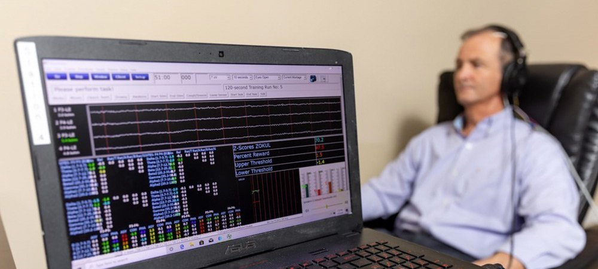

Introducción
Varias empresas como Muse, Nexmind o Urgoniht han desarrollado el producto ideal para ayudar a todas las personas con problemas de sueño. .
El Neurofeedback es la base científica de este dispositivo. El Neurofeedback es un método científico que permite mostrar la actividad cerebral de una persona y mejorar su salud y el rendimiento del sueño. Este método científico ha sido probado y desarrollado exitosamente durante décadas en laboratorios de investigación.
Gracias al trabajo de neuro-científicos, ingenieros de hardware y aprendizaje automático, desarrolladores y diseñadores que trabajan para crear un vínculo telepático entre los humanos y la tecnología; se ha podido desarrollar dicho dispositivo que está ayudando cada vez a más gente.

En qué consiste y quién lo desarrolla
Este dispositivo, que depende de la empresa que lo desarrolla tiene un nombre diferente, cuanta con electrodos que producen más ondas cerebrales asociadas clínicamente con el sueño. Cabe destacar que el dispositivo es capaz de distinguir las distintas ondas cerebrales (delta, theta, alpha, beta, gamma, etc.) y medir sus hercios, pero básicamente tiene la función de generar y detectar las ondas beta baja o SMR las cuales están entre 12 y 15 Hz.
Este producto se utiliza durante el día, ya que es en el día cuando se producen las ondas SMR. Gracias a este dispositivo se producirán más ondas SMR, lo que mejorará el sueño de aquellas personas que lo usen. Para su correcto hay que mantener una concentración y estar relajado. Los cambios aparecen pasados 5 semanas, y el que lo usa debe ejercer sesiones de entre 20 minutos durante 3 días a la semana. El usuario deberá tener la aplicación móvil por la cual podrá ver el progreso y realizar un calendario con las sesiones.
Muse

Los efectos destacados que han sido comprobados con: Dormirse un 45% más rápido y Reducir los despertares nocturnos en un 53%. Otras ventajas son las siguientes: mejora en la concentración, facilidad para tomar decisiones, más creatividad, mejor bienestar psicológico, mejor autocontrol o desarrollo de la autoconsciencia, entre otras. Neurofeedback disminuye ese exceso de ondas rápidas como beta, y entrena el aumento de ondas lentas. Al conseguir la regulación de éstas, descienden los niveles de impulsividad e hiperactividad, de ansiedad y de estrés, y por último, a consecuencia de éstas, se produce una mejora en la cantidad y calidad del sueño.
Nexmind

El primer paso consiste en una valoración inicial, por parte de un psicólogo, que decidirá si el Neurofeedback es el tratamiento de elección para cada caso particular. Si es así, se llevará a cabo el Mapeo Cerebral, mediante el cual se obtiene un registro de la actividad eléctrica del cerebro que se analizará para detectar los patrones de ondas del paciente. De esta forma, se establecerá un plan de entrenamiento adecuado para poder mejorar el insomnio y la sintomatología concreta de la persona. El entrenamiento consistirá en un mínimo de 20 sesiones, de 30-45 minutos cada una, en las que se colocan unos sensores en la cabeza del paciente que van recogiendo la información de su actividad cerebral en ese mismo momento. Teniendo en cuenta esta información, el paciente recibe estímulos auditivos o visuales que reforzarán o inhibirán ciertas ondas cerebrales. De esta manera se producirá un cambio en la actividad del cerebro que causará la mejora en el sueño.
Urgoniht

Existen numeroso deportes extremos realizados en una superficia terrestre. Para estos deportes se puede usar un vehículo o unos materiales o simplemente practicarlo sin la necesidad de ningún material o vehículo, como es el caso de parkour. Estos deportes pueden ser practicados en muchos tipos de superficies terrestres: montañas, circuitos, campo, etc. Los más conocidos son el alpinismo, el rápel, el parkour y las carreras de coches y motos. Estos deportes, a pesar de que no parezcan tan peligrosos como los acuáticos o aéreos, pueden ser practicados en unas determinadas zonas y circustancias que lo lleven a un extremo nivel de pelogrisodidad para la integridad física, y en muchos casos se ha cobrado la vida de los que lo practican
¡Consigue el tuyo!
INTRODUCE TUS DATOS Y PARTICIPA EN NUESTRO SORTEO DE UN DISPOSITIVO: